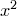

tabulate [<range specification>] ( <expression> | <filename> )
[index <index specification>] [every <every specification>]
[using <using specification>] [select <select specifier>]
[with <output format>]
The tabulate commands produces a text file containing the values of a function at a set of points. For example, to produce a data file called sine.dat with the principal values of the sine function:
set output 'sine.dat' tabulate [-pi:pi] sin(x)
The tabulate command can also be used to select portions of data files. For example, to select the third, sixth and ninth columns of the data file data.dat, but only when the arcsine of the value in the fourth column is positive:
set output 'filtered.dat' tabulate 'data.dat' u 3:6:9 select (asin($4)>0)
The format used in each column of the output file is chosen automatically with integers and small numbers treated intelligently to produce output which preserves accuracy, but is also easily human-readable. If desired, however, a format statement may be specified using the with format specifier. The syntax for this is similar to that expected by the Python string substitution operator (%)†Note that this operator can also be used within PyXPlot; see Section 2.3 for details.. For example, to tabulate the values of  to very many significant figures one could use:
tabulate x**2 with format "%27.20e"
If there are not enough columns present in the supplied format statement it will be repeated in a cyclic fashion; e.g. in the example above the single supplied format is used for both columns.
The index, every, using and select modifiers work in the same way as for the plot command. For example multiple functions may be tabulated into the same file with the using modifier:
tabulate [0:2*pi] sin(x):cos(x):tan(x) u 1:2:3:4
The samples setting can be used to control the number of points that are inserted into the data file. If the  -axis is set to be logarithmic then the points at which the functions are evaluated are spaced logarithmically.
-axis is set to be logarithmic then the points at which the functions are evaluated are spaced logarithmically.